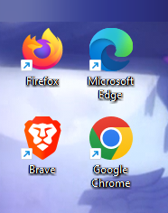
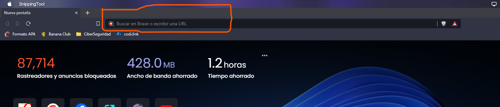
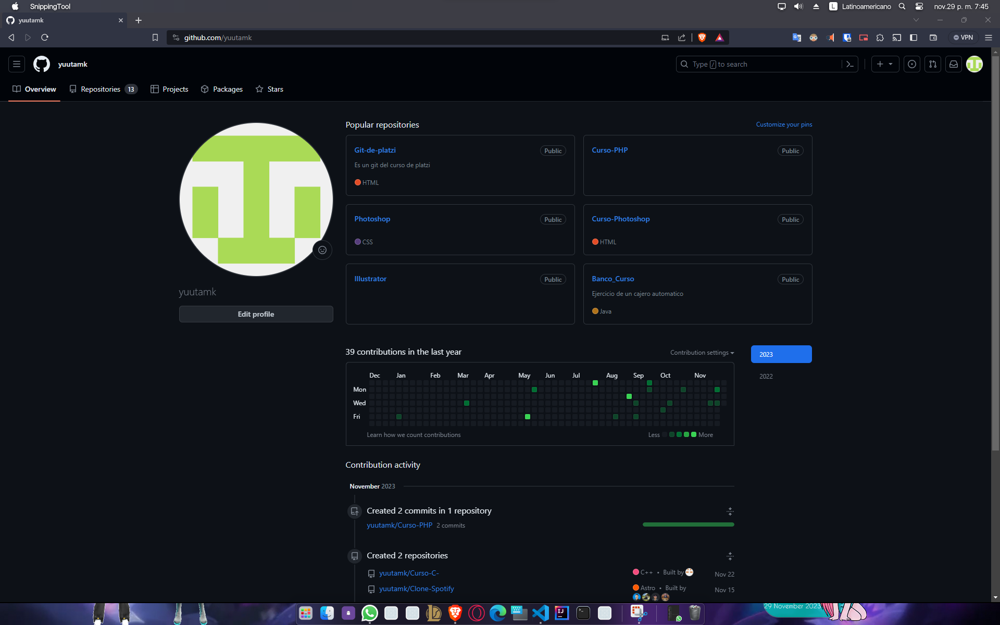
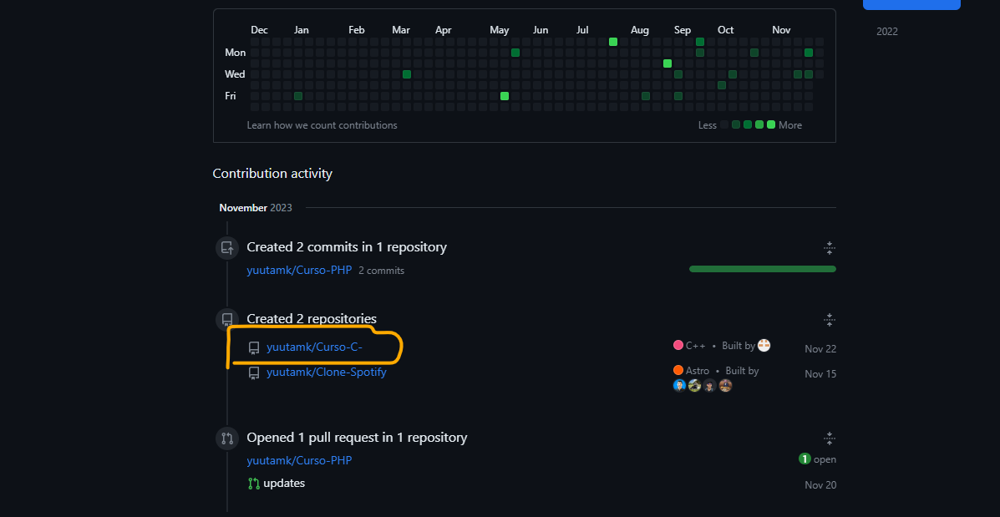
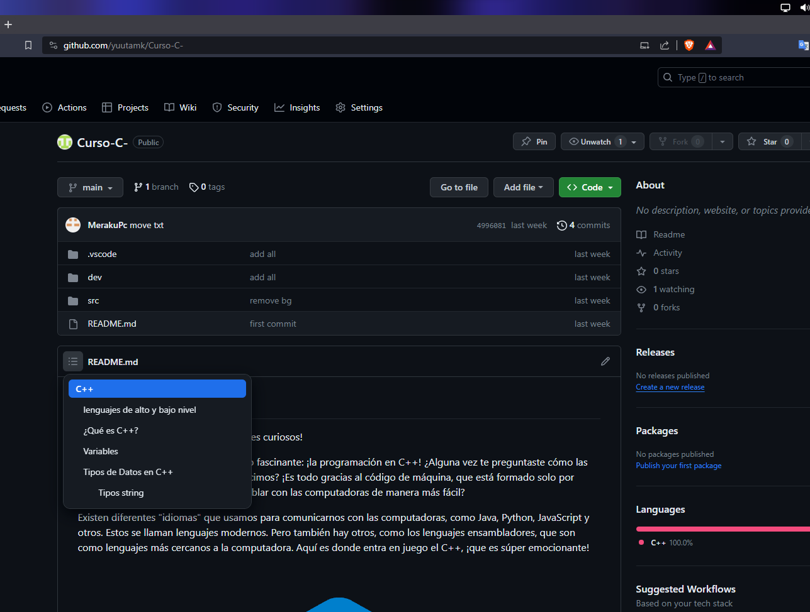
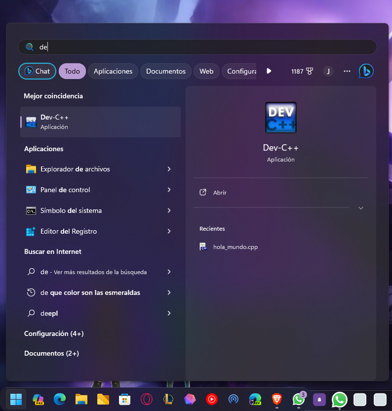
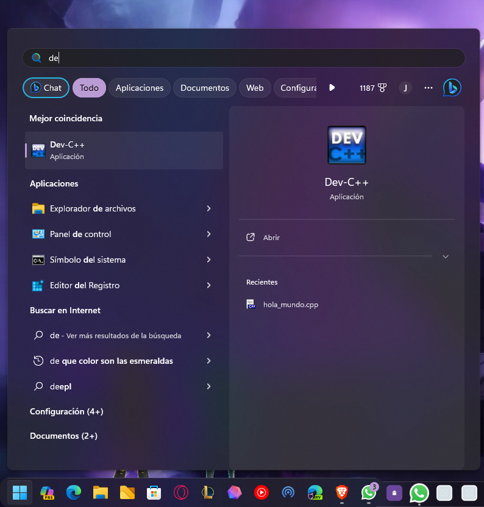

Identificar el navegador en la computadora (chrome, firefox, edge, etc.)

Identificar la barra de direcciones en el navegador

Teclear la dirección del github "github.com/yuutamk"

identificar el repositorio del curso, puede estar en la parte inferior al mostrar mas actividades o bien podemos buscar en el buscador de la pagina.


Damos clic al repositorio del curso

en el menú identificamos el tema que corresponde

 
